Fauna Continental
Estas son algunas de las especies terrestres que pueden apreciarse dentro de la Península Valdés. Estas constituyen parte imoirtabte de su fragil y complejo ecosistema. Ala vera de la ruta, o en los senderos, el visitante puede adentratse en el fascinante mundo de la espeta patagónica. Disfrutelas, admirelas, respételas.
Avés
Halcon Peregrino
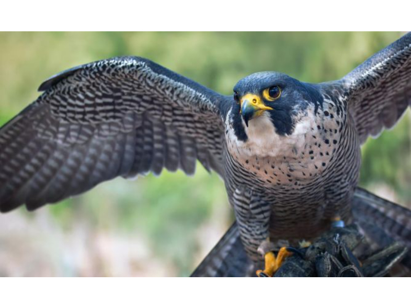Aguila Mora
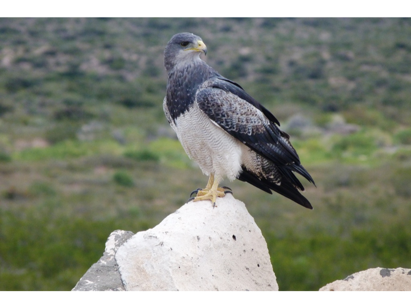Martineta Común
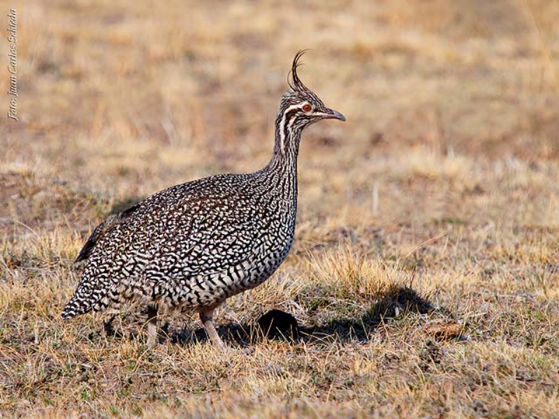Jote de Cabeza Colorada
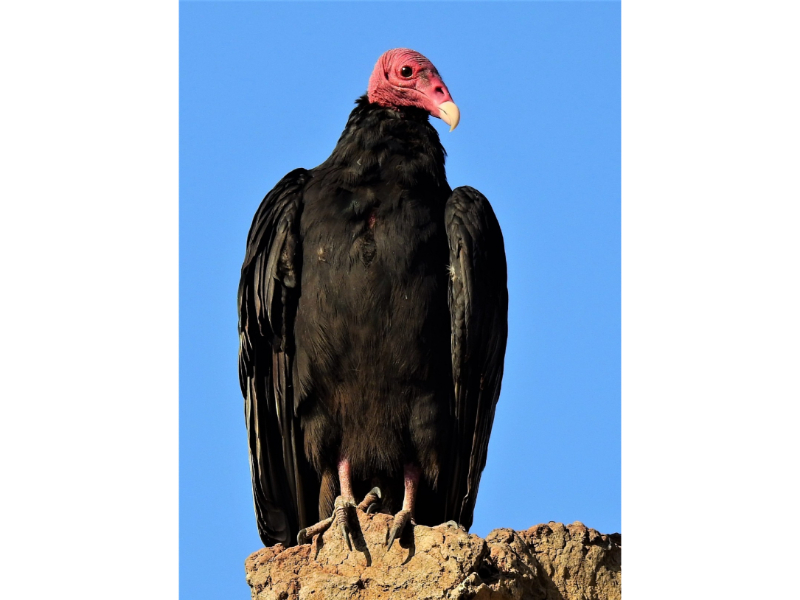Loica
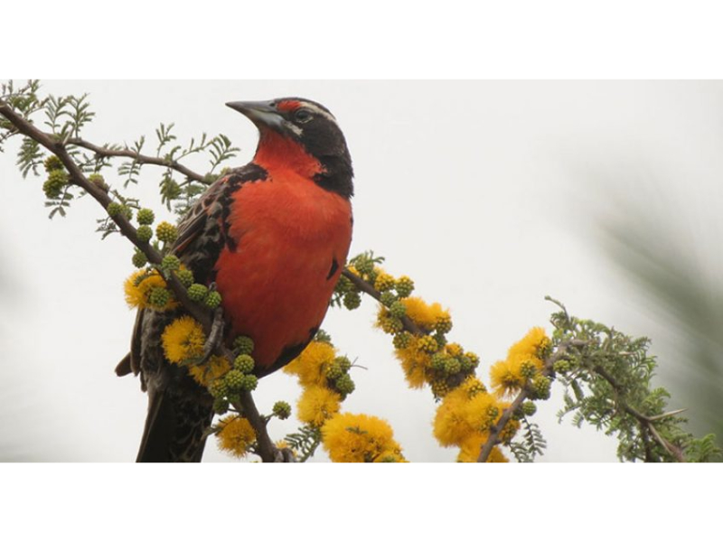Choique
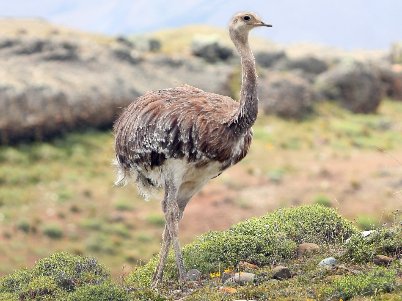Animales terrestres
Zorro Gris
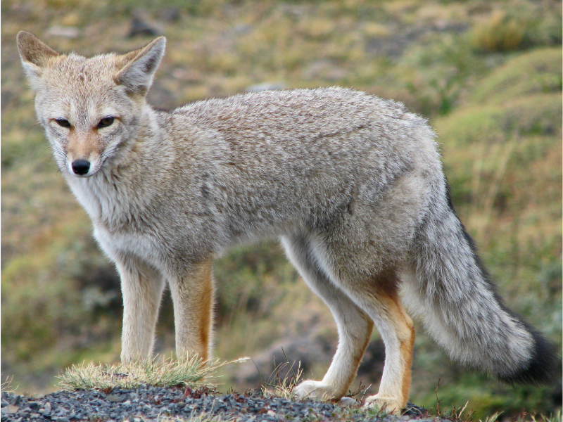Mara
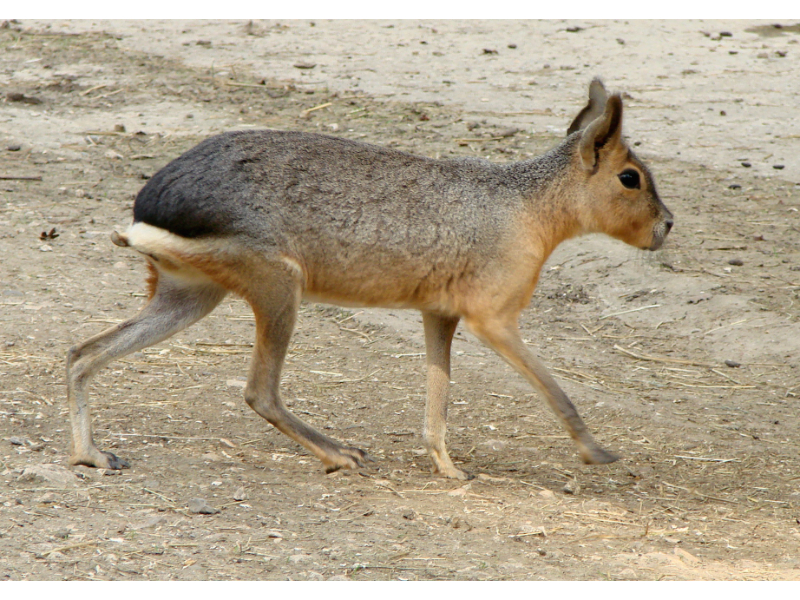Guanaco
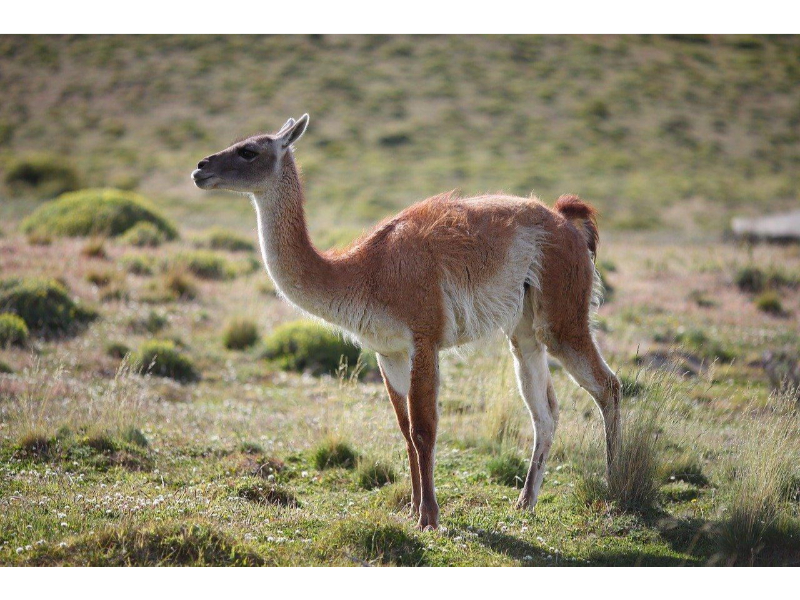Peludo
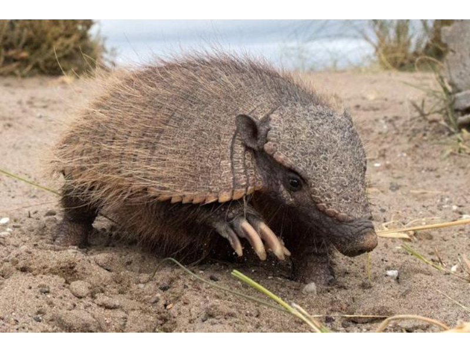Yarará Ñata
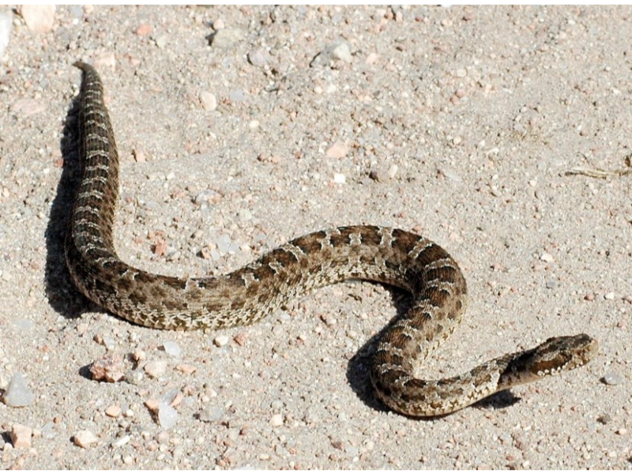Fauna Costera
Las costas de Península Valdés son áreas de reproduccion de varias especies que enmarcan el alto valor natural que posee este Patrimonio de la Humanidad. En los acantilados y playas podrá admirar la gran diversidad de las especies que, habitan o visitan, estos santuarios. contemple y honre la responsabilidad de conservarlos.
Animales Costeros
Flamenco Austral
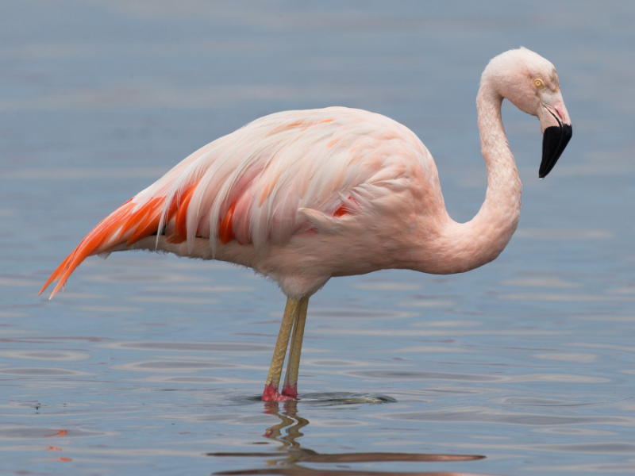Pingüino de Magallanes
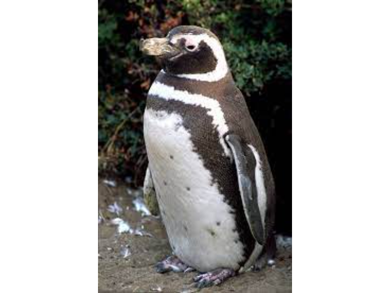Pardela Oscura
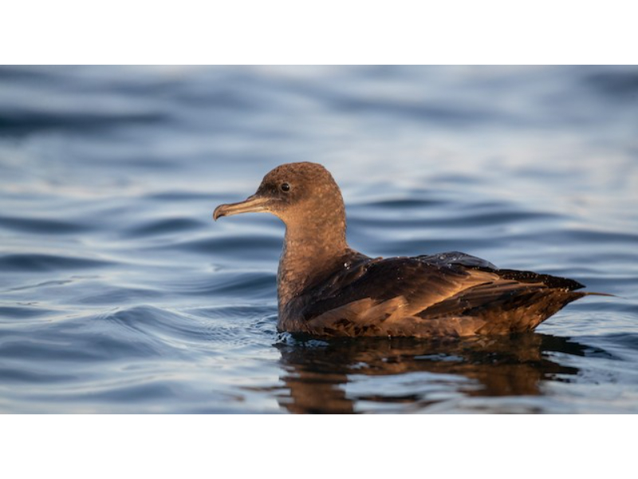Cormoran Imperial

Bigua
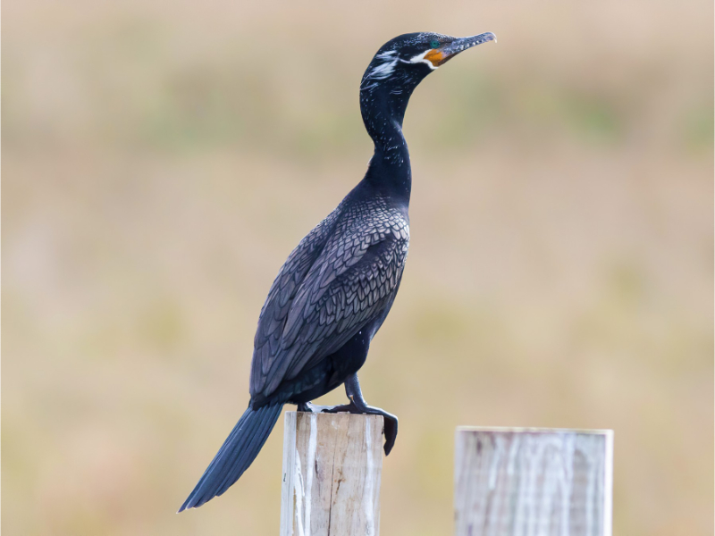Chorlito Doble Collar
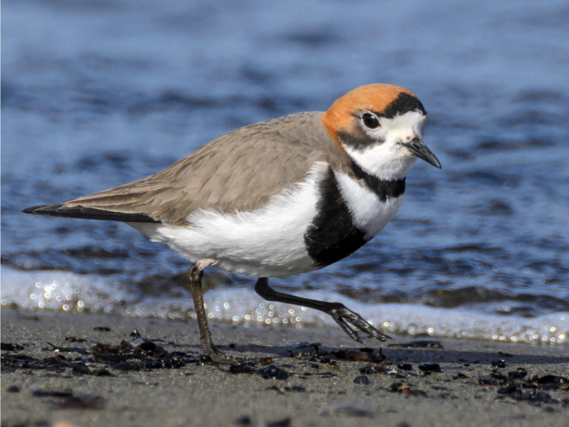Elefante Marino
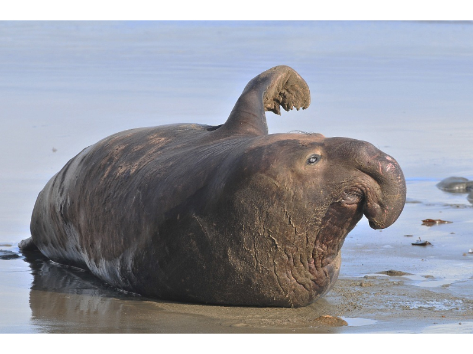Lobo Marino
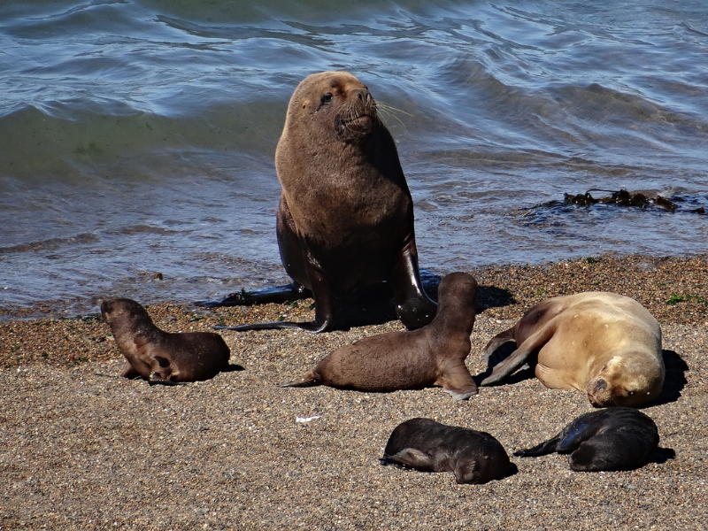Fauna Marina
El mar que rodea a la Península Valdés es hogar de varias especies de cetáceos y peces. Entre los primeros, los delfines y las ballenas, son esperados visitantes que deleitan a quien contempla su majestuosidad. Protegerlos es nuestra oblicación.
Animales Marinos
Delfín Oscuro
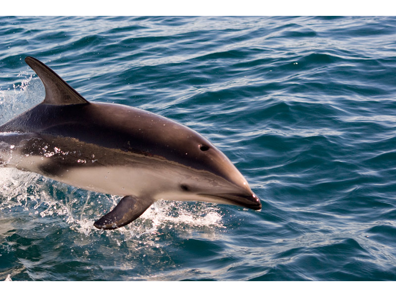Orca
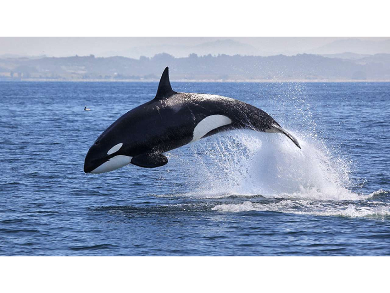Delfín Nariz de Botella

Ballena Franca Austral